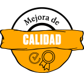
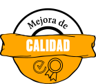

A través de esta infografía, queremos compartir nuestra propuesta tecnológica con base en once prácticas para una caficultura con enfoque climático y sostenible.
Con ellas, los agricultores y agricultoras con los que hemos trabajado han logrado obtener beneficios como la disminución del daño ocasionado por las plagas y enfermedades, el ahorro por efecto de la disminución de la compra de insumos externos y una mayor producción de café de calidad.
Hemos organizado estas prácticas en tres categorías según sus beneficios
 



Este aprendizaje se basa en la experiencia de Practical Action en 180 parcelas de pequeños productores no organizados en un entorno de ecosistemas frágiles de la selva alta de la región San Martín. Luego de la aplicación de estas prácticas, las y los productores vieron un aumento en sus ingresos mayor al 25% y percibieron un impacto positivo en su relación con el ecosistema local.
¿Qué podemos hacer si nos enfrentamos a una parcela cada vez menos productiva? ¿Cómo podemos encontrar un balance que beneficie también al medio ambiente?
¡CONOZCAMOS ESTAS ONCE PRÁCTICAS SOSTENIBLES!